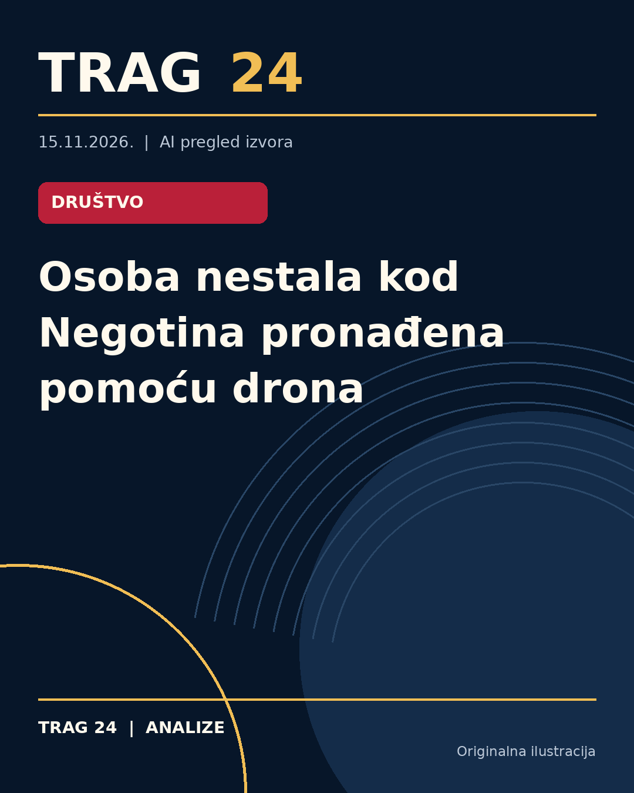

Osoba nestala kod Negotina pronađena pomoću drona

ŠTA SE DOGODILO
Osoba koja je nestala na području Negotina prethodne večeri pronađena je danas popodne zahvaljujući angažovanju pripadnika Sektora za vanredne situacije Ministarstva unutrašnjih poslova. Pretraga je obavljena u rejonu puta od Negotina ka Bukovu, a za pronalazak je korišćen dron.
HRONOLOGIJA
Nestanak osobe zabeležen je sinoć, nakon čega su nadležne službe odmah započele potragu. Tokom dana, dva člana Vatrogasno-spasilačke jedinice u Negotinu sa vozilom i dronom pretražili su teren. Nakon pronalaska, vatrogasci-spasioci su lice bezbedno prebacili do vozila Hitne pomoći u Negotinu.
ŠTA NAVODE IZVORI
Ministarstvo unutrašnjih poslova navodi da je lice pronađeno u rejonu navedenog puta korišćenjem drona i da je nalaz vatrogasaca-spasilaca bio uspešan u brzom nalaženju nestale osobe. Izvor Insajder takođe dodaje da je osoba u dobru i stabilnom stanju, dok N1 i Danas ističu samo činjenicu pronalaska i prebacivanja do hitne pomoći.
ŠTA JE POTVRĐENO
Potvrđeno je da je nestala osoba pronađena danas popodne koristivši dron prilikom pretrage terena u Negotinu. Angažovani su bili pripadnici Vatrogasno-spasilačke jedinice Negotin, koji su i izvršili bezbedan transfer pronađene osobe do vozila Hitne pomoći.
ŠTA NIJE POTVRĐENO
Nije potvrđeno zbog čega je osoba nestala niti druge okolnosti vezane za njen nestanak. Takođe nisu poznati detalji o stanju osobe izvan informacije koja dolazi iz Insajdera da je stanje dobro i stabilno.
ŠTA OSTАJE OTVORENO: Ostaje nepoznato šta je tačno dovelo do nestanka osobe i koji su bili precizni detalji trajanja potrage. Nije dostupna ni potvrda o daljem medicinskom tretmanu ili ishodu nakon pronalaska.
Izvori
- https://n1info.rs/vesti/mup-osoba-koja-je-sinoc-nestala-kod-negotina-pronadjena-pomocu-drona/
- https://insajder.net/prenosimo/mup-osoba-koja-je-sinoc-nestala-kod-negotina-pronadena-pomocu-drona
- https://www.danas.rs/vesti/drustvo/mup-osoba-koja-je-sinoc-nestala-kod-negotina-pronadjena-pomocu-drona/
Ova analiza je pripremljena uz pomoć veštačke inteligencije na osnovu javno dostupnih izvora. Navodi izvora nisu nužno nezavisno potvrđeni.